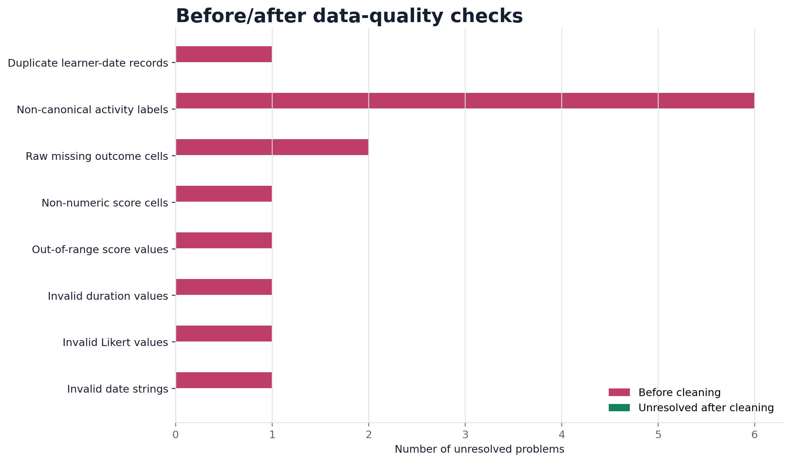
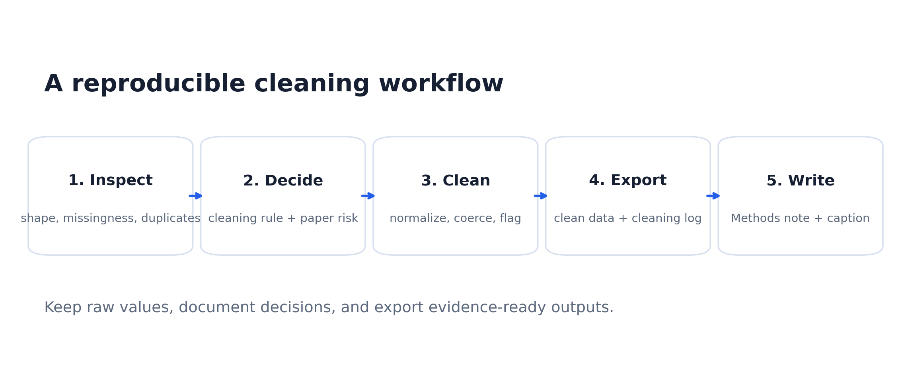

Inspect
Tìm missing cells, duplicate key, label variants và type failures.
Find missing cells, duplicate keys, label variants, and type failures.
Học cách biến một bảng lộn xộn thành dữ liệu có thể tin để vẽ figure: kiểm tra missing values, duplicate key, label variants, type conversion và valid ranges.
Learn how to turn a messy table into trustworthy figure-ready evidence: missing values, duplicate keys, label variants, type conversion, and valid ranges.

Module này không dạy "xóa lỗi cho nhanh". Nó dạy cách ghi lại quyết định để người đọc hiểu figure được tạo từ dữ liệu nào.
This module does not teach quick deletion. It teaches decision logging so readers can understand what evidence the figure comes from.
Tìm missing cells, duplicate key, label variants và type failures.
Find missing cells, duplicate keys, label variants, and type failures.
Chuẩn hóa label, convert type, set invalid values thành NA.
Normalize labels, convert types, and set invalid values to NA.
Ghi issue, decision, affected rows, analysis risk và paper note.
Record issue, decision, affected rows, analysis risk, and paper note.
Viết Methods note và caption không overclaim.
Write a Methods note and caption that do not overclaim.
Learner survey là lab chính. Education indicators giúp chuyển sang dữ liệu chính sách. Transfer bank giúp học viên tự nói về hướng research của mình.
The learner survey is the main lab. Education indicators transfer the skill to policy data. The transfer bank helps learners connect the logic to their own research direction.
Một bảng nhỏ có đủ lỗi: missing, duplicate key, label variants, type failures và invalid ranges.
A small table with missingness, duplicate key, label variants, type failures, and invalid ranges.
CSVCountry labels, percent strings, missing years và school-level labels không thống nhất.
Country labels, percent strings, missing years, and inconsistent school-level labels.
CSVCác kịch bản cho education policy, TCSOL, contrastive linguistics và translation studies.
Scenarios for education policy, TCSOL, contrastive linguistics, and translation studies.
CSVKhông ghi log thì rất khó giải thích vì sao một row bị bỏ, vì sao một label đổi tên, hoặc vì sao gain score chỉ tính trên complete pairs.
Without a log, it is difficult to explain why a row was removed, why a label changed, or why gain scores use only complete pairs.
| Step | Python action | Paper meaning |
|---|---|---|
| Inspect | isna(), duplicated(subset=...), value_counts() | Find risks before plotting. |
| Decide | Write the rule in a log row | Make the cleaning decision defensible. |
| Clean | str.strip(), to_numeric(), to_datetime() | Convert the table into analysis-ready evidence. |
| Export | to_csv(), savefig() | Produce a clean dataset, log, figure and caption. |

Output cuối không chỉ là một bảng sạch. Nó là một package gồm clean data, cleaning log, figure before/after và Methods note.
The final output is not just a clean table. It is a package: clean data, cleaning log, before/after figure, and Methods note.
Nếu học viên giải thích được duplicate key, label map, type conversion audit và complete-pair rule, họ đã sẵn sàng transform data bằng filter, groupby, pivot và merge.
If learners can explain the duplicate key, label map, type-conversion audit, and complete-pair rule, they are ready to transform data with filter, groupby, pivot, and merge.
{kind=link}
{kind=link}